Централизованное управление
Все компоненты системы управляются из единого центра: это повышает защиту и ускоряет реакцию на инциденты
Собственная система контроля и управления доступом, базирующаяся на платформе TRASSIR
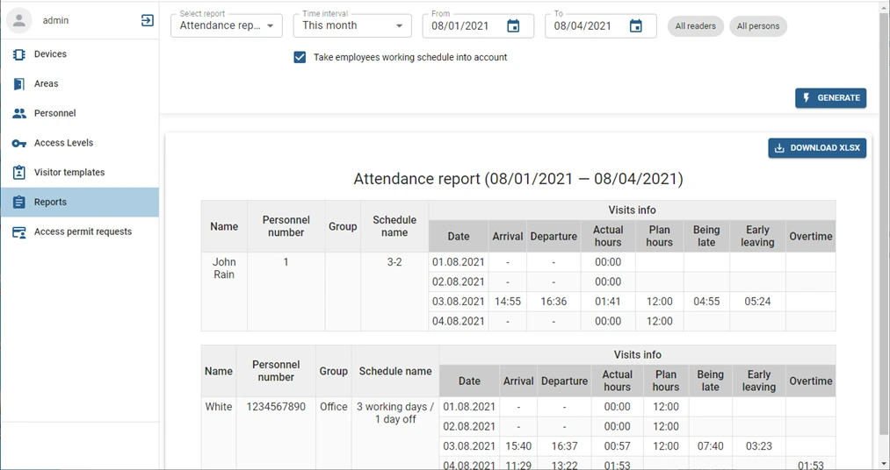
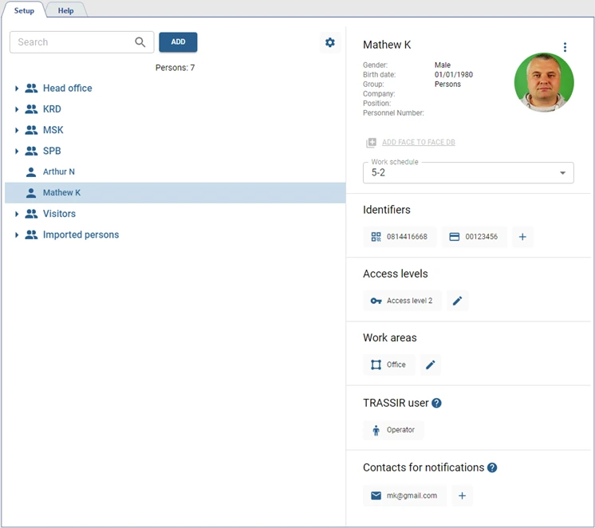
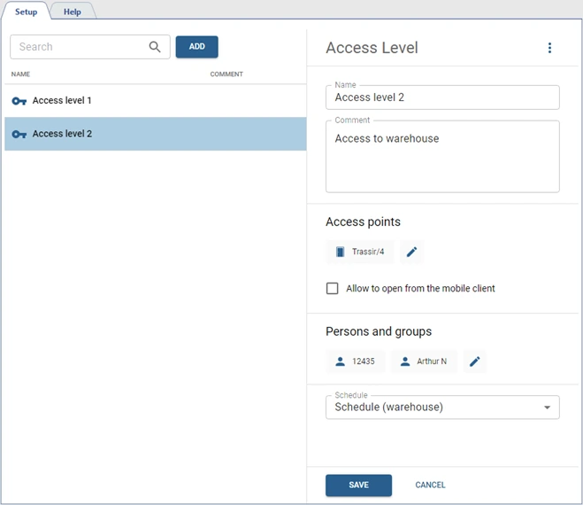
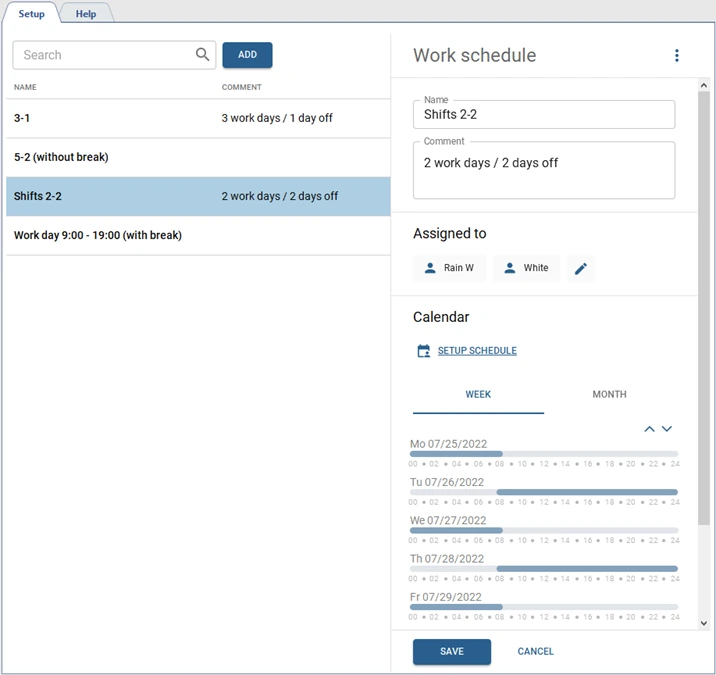
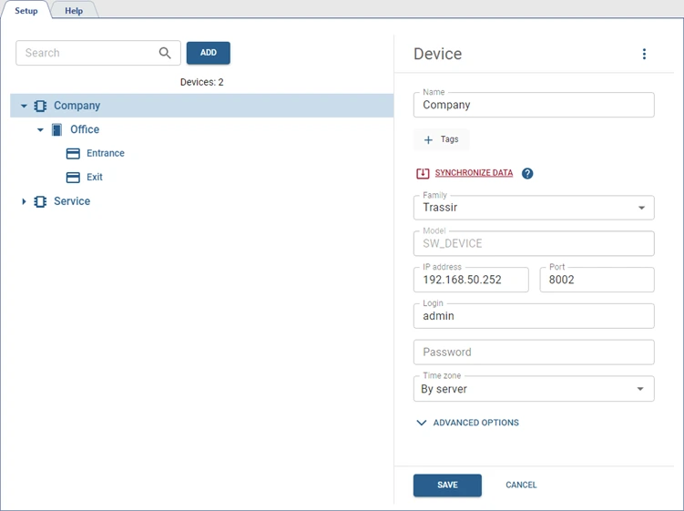
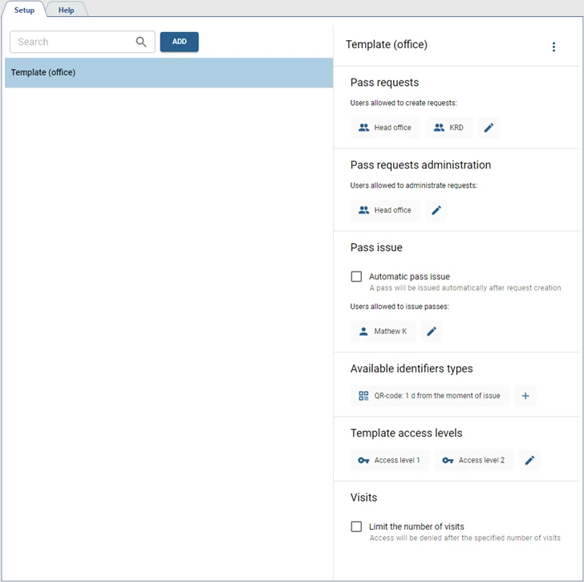
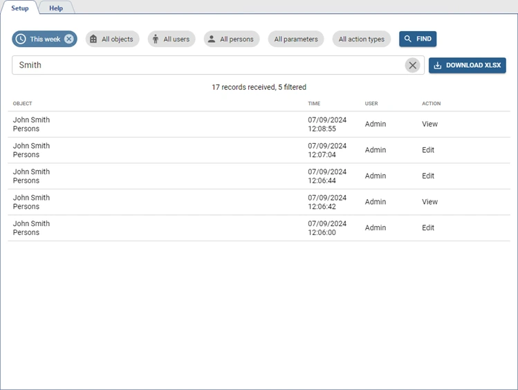
Видеонаблюдение, видеоаналитика и СКУД объединены в общую систему безопасности с прозрачной логикой работы.
Все компоненты системы управляются из единого центра: это повышает защиту и ускоряет реакцию на инциденты
Одна платформа для начала работы, понятный интерфейс и простая логика настройки.
Поддержка оборудования других вендоров (турникеты, двери, шлагбаумы, лифты).
Позволяет организовать единую систему учета рабочего времени и контроля доступа на распределенных объектах с управлением из головного офиса.
Правила, сценарии и открытый API дают широкие возможности для адаптации под задачи бизнеса.
Расширенные сценарии управления доступом, интеграция с видеонаблюдением и видеоаналитикой позволяют повысить уровень контроля и безопасности на объекте и исключить человеческий фактор при обработке тревог.

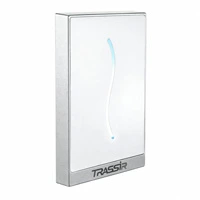
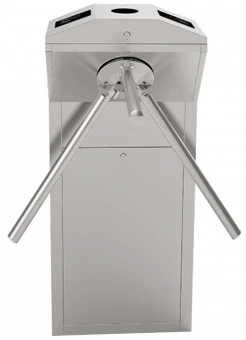
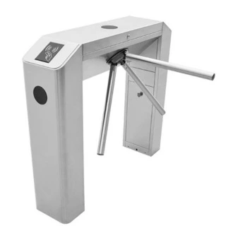
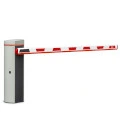
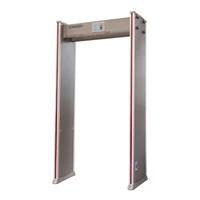
Подбор оборудования
От небольшой системы до сложного проекта.
Поможем выбрать подходящее решение.